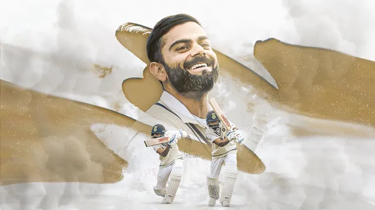
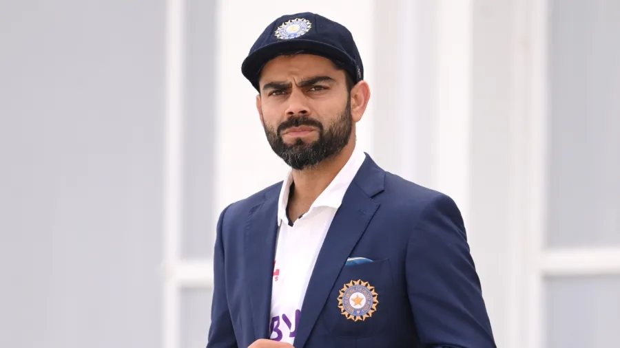
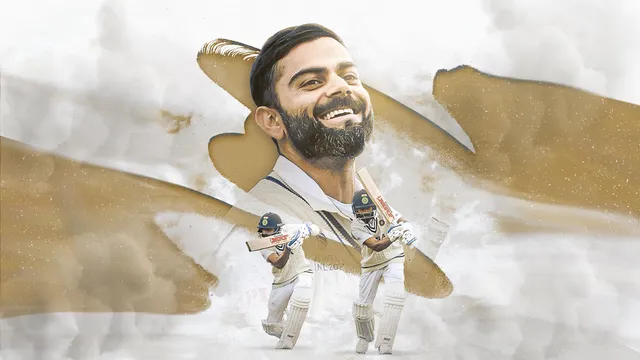
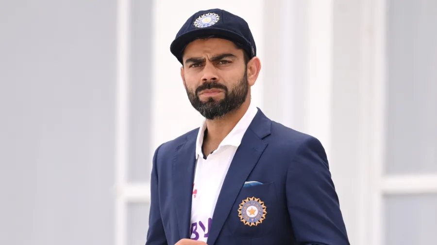

Virat Kohli (Hindi: [ʋɪˈɾɑːʈ ˈkoːɦliː] (listen); born 5 November 1988) is an Indian international cricketer and former captain of the India national cricket team. He plays for Delhi in domestic cricket and Royal Challengers Bangalore in the Indian Premier League as a right-handed batsman. He is often considered one of the best batsmen of his era and some critics believe him to be one of the best limited-overs batsmen in history.[3] Between 2013 and 2022, he captained the India cricket team in 213 matches across all three formats. With 40 wins out of 68 matches, Kohli is one of the most successful Indian Test captains.[4][5]
Kohli made his Test debut in 2011.[6] He reached the number one spot in the ICC rankings for ODI batsmen for the first time in 2013.[7] He has won Man of the Tournament twice at the ICC World Twenty20 (in 2014 and 2016). He also holds the world record of being the fastest to 23,000 international runs.[8]
Kohli has been the recipient of many awards– most notably the Sir Garfield Sobers Trophy (ICC Men's Cricketer of the Decade): 2011–2020; Sir Garfield Sobers Trophy (ICC Cricketer of the Year) in 2017 and 2018; ICC Test Player of the Year (2018); ICC ODI Player of the Year (2012, 2017, 2018) and Wisden Leading Cricketer in the World (2016, 2017 and 2018).[9] At the national level, he was awarded the Arjuna Award in 2013, the Padma Shri under the sports category in 2017[10] and the Rajiv Gandhi Khel Ratna award, the highest sporting honour in India, in 2018.[11]
In 2016, he was ranked as one of the world's most famous athletes by ESPN[12] and one of the most valuable athlete brands by Forbes.[13] In 2018, Time magazine named him one of the 100 most influential people in the world.[14] In 2020, he was ranked 66th in Forbes list of the top 100 highest-paid athletes in the world for the year 2020 with estimated earnings of over $26 million.[15]
 



| sr.no | Records | Year |
|---|---|---|
| 1) | 1st most hundreds against one team(9) | 2009-22 |
| 2) | 1st fastest to 12000 runs[ODI] (242) | 02 Dec 2022 |
| 3) | 1st most player-of-the-series awards[t20](7) | 2010-22 |
| 4) | 1st Highest carrier batting avarage[t20](51.50) | 2010-22 |
| 5) | 2nd Most fours in carrier[t20](298) | 2010-22 |